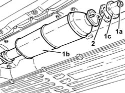
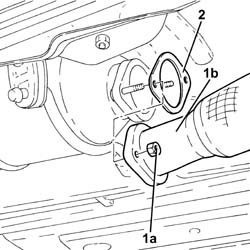
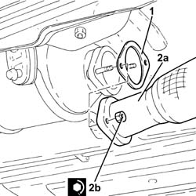
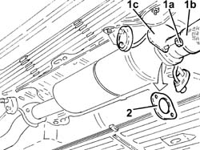
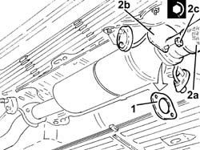

1076B34 front catalytic converter attachment seal - replace
- Path
- Procedures > 10 ENGINE > 1076 EXHAUST PIPES AND SILENCERS > 1076B exhaust pipes and silencers > 1076B34 front catalytic converter attachment seal - replace
- Kind
- repair procedure (removal / refitting; the operation number is the code)
- Applies to
- engines: 1.6 TS , 1.8 TS, 2.0 JTS, 2.5 V6, 1.9 JTD 8v , 1.9 JTD 16v, 2.0 JTS, 2.4 JTD 10v, 2.4 JTD 20v; all production periods
- Interactive page
- https://sloeber94.github.io/elrnDB-a156/en/#/3237571
Applies to: engines: 2.5 V6; all production periods
 Removing
Removing
 Refitting
RefittingApplies to: engines: 2.5 V6; all production periods
Refitting
RemovingFit a new front attachment gasket for the catalytic converter.
Applies to: engines: 1.6 TS , 1.8 TS; all production periods
Applies to: engines: 2.0 JTS, 2.0 JTS; all production periods
Removing
RefittingPosition the vehicle on the ramp.
Ensure that the ignition key is in the OFF position, then disconnect the negative battery terminal.
 | Name | Connector |
|---|---|---|
- | Battery |
Drain the air conditioner coolant circuit 5040A10 Air conditioning refrigerant CIRCUIT - Draining and Refilling .
Proceed with removal 4450B04 right front wheel r r .
Proceed with removal 7055B54 under-engine guard - r r .
Proceed with removal 5040A20 air conditioner compressor - r+r - includes fluid level check and top up if necessary .
Proceed with removal 5040A26 compressor mount - r r .
Proceed with removal 1016A40 ignition coil cover on cylinder head- r+r .
Proceed with removal 1076A48 catalytic converter heat shield - r r .
Proceed with removal 1080B62 catalytic converter - r + r .
Applies to: engines: 2.0 JTS, 2.0 JTS; all production periods
Refitting
RemovingProceed with refitting 1080B62 catalytic converter - r + r .
Proceed with refitting 1076A48 catalytic converter heat shield - r r .
Proceed with refitting 1016A40 ignition coil cover on cylinder head- r+r .
Proceed with refitting 5040A26 compressor mount - r r .
Proceed with refitting 5040A20 air conditioner compressor - r+r - includes fluid level check and top up if necessary .
Proceed with refitting 7055B54 under-engine guard - r r .
Proceed with refitting 4450B04 right front wheel r r .
Fill the air conditioner coolant circuit 5040A10 Air conditioning refrigerant CIRCUIT - Draining and Refilling .
Connect the negative (-) battery terminal.
Remove the car from the ramps.
Applies to: engines: 1.9 JTD 8v , 2.4 JTD 10v; all production periods
Removing
RefittingUndo the nuts and remove the front exhaust pipe section safety bracket.
Undo the bolt securing the front exhaust pipe rigid mount to the collar.
1. Undo nuts (1a) securing catalytic converter ( 1b) to the front section of exhaust pipe (1c).
2. Remove the gasket.

Applies to: engines: 1.9 JTD 8v , 2.4 JTD 10v; all production periods
Refitting
RemovingFit a new gasket, then tighten the nuts securing the catalytic converter to the front exhaust pipe section to the specified torque.
 | Fastening | Component | Ø | Value (daNm) |
|---|---|---|---|---|
- | Nut | CATALYTIC CONVERTER (ONE) | M8 | 2.0 - 2.5 |
Tighten the bolt securing the front exhaust pipe section rigid mount to the collar.
Fit the front exhaust pipe section safety bracket and bolt in place.
Applies to: engines: 1.9 JTD 16v; all production periods
Removing
RefittingPosition the vehicle on the ramp.
1. Undo the nuts (1a) and disconnect the front section of the exhaust pipe (1b) from the catalytic converter.
2. Remove the front attachment gasket for the catalytic converter.

Applies to: engines: 1.9 JTD 16v; all production periods
Refitting
Removing1. Place the front catalytic converter attachment gasket in the housing.
2. Place the front section of the exhaust pipe (2a) back in its housing and secure by tightening the nuts (2b) to the recommended torque.
| Fastening | Component | Ø | Value (daNm) |
|---|---|---|---|---|
2b | Nut | PRE-CAT CONVERTOR/CAT CONVERTOR PIPE | M8 | (Catalytic converter side) 2.3 ÷ 2.8 |

Applies to: engines: 1.9 JTD 16v; all production periods
Remove the car from the ramps.
Applies to: engines: 2.4 JTD 20v; all production periods
Removing
RefittingPosition the vehicle on the ramp.
Proceed with removal 7055B54 under-engine guard - r r .
1. Undo the nuts (1a) and disconnect the exhaust pipe between precatalyzer and catalytic converter (1b), catalytic converter side together with the locking bracket on the flexible supports (1b).
2. Remove the front attachment gasket for the catalytic converter.

Applies to: engines: 2.4 JTD 20v; all production periods
Refitting
Removing1. Place the front catalytic converter attachment gasket in the housing.
2. Refit the exhaust pipe in its seating between the precatalyzer and the catalytic converter (2a), catalytic converter side, and the locking bracket on the flexible supports (2b), then tighten the nuts (2c) to the specified torque.
| Fastening | Component | Ø | Value (daNm) |
|---|---|---|---|---|
2c | Nut | PRE-CAT CONVERTOR/CAT CONVERTOR PIPE | M8 | (Catalytic converter side) 2.3 ÷ 2.8 |

Applies to: engines: 2.4 JTD 20v; all production periods
Proceed with refitting 7055B54 under-engine guard - r r .
Remove the car from the ramps.
Topics linked from this page (9)
- 1016A40 ignition coil cover on cylinder head- r+r
- 1076A48 catalytic converter heat shield - r r
- 1080B62 catalytic converter - r + r
- 4450B04 right front wheel r r
- 5040A10 Air conditioning refrigerant CIRCUIT - Draining and Refilling
- 5040A20 air conditioner compressor - r+r - includes fluid level check and top up if necessary
- 5040A26 compressor mount - r r
- 7055B54 under-engine guard - r r
- A1B Battery ( BATTERY NEGATIVE )